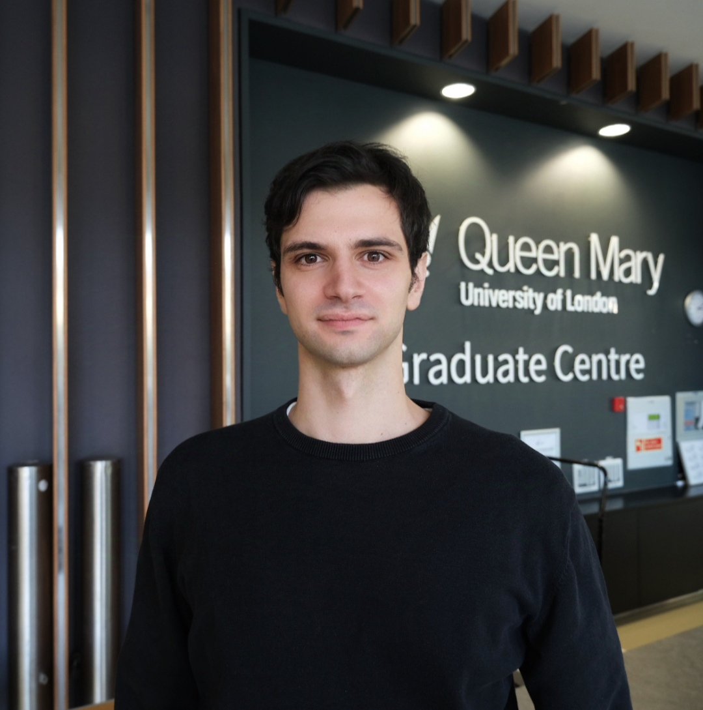

School of Economics and Finance
Queen Mary University of London
Mile End Road, London E1 4NS, UK
Queen Mary University of London
Mile End Road, London E1 4NS, UK
Welcome to my personal website!
I am a PhD candidate in Economics at the School of Economics and Finance, Queen Mary University of London, supervised by Haroon Mumtaz and Andrea Carriero.
My research interests are in Macroeconometrics and Bayesian Econometrics, with a focus on their applications to monetary policy transmission and to the economic impacts of climate and weather.
In 2025, I visited the De Nederlandsche Bank (DNB) and the Deutsche Bundesbank as a PhD intern.
You can download my CV here.